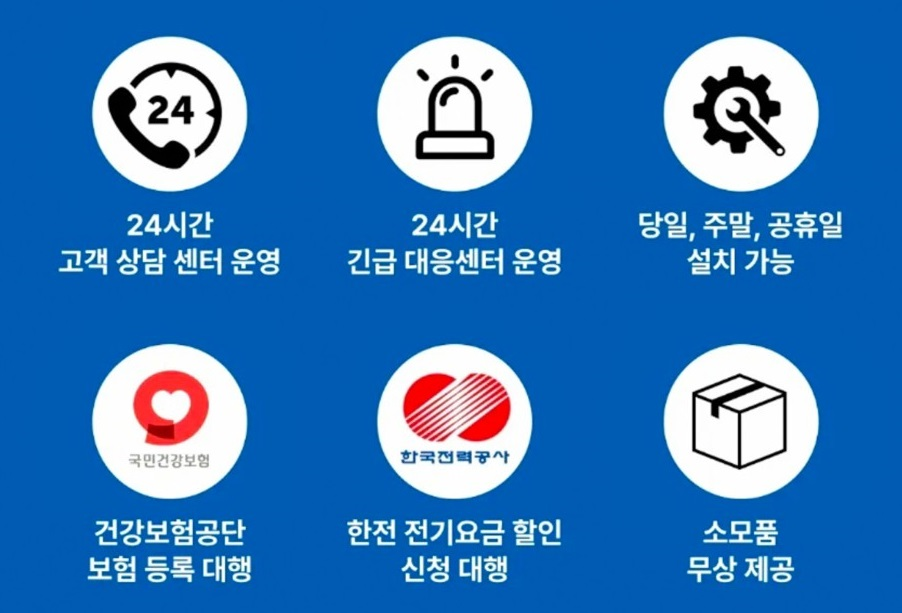
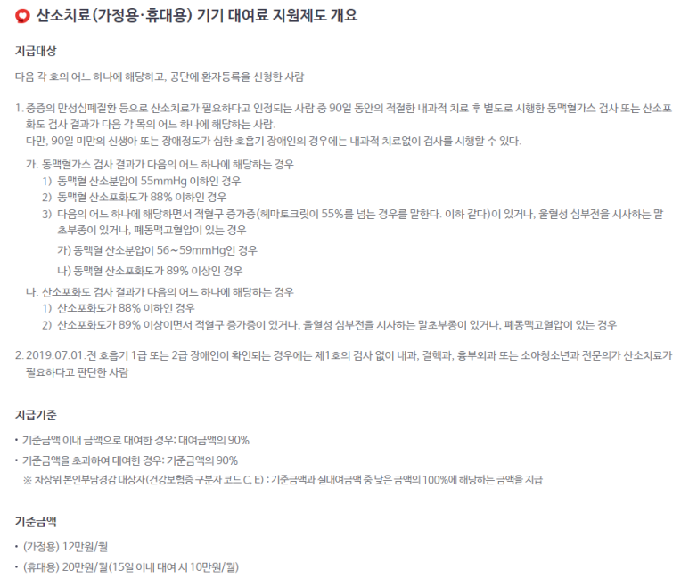

병원에서 산소치료처방전을 발급받는 방법
- 의사 상담 및 진단: 먼저 호흡기 질환 등으로 산소치료가 필요한지를 판단하기 위해 의사와 상담합니다. 의사는 환자의 증상과 검사 결과를 토대로 산소치료가 필요한지를 결정합니다.
- 진료 및 검사: 의사가 산소치료가 필요하다고 판단하면, 해당 환자에게 필요한 검사를 요청할 수 있습니다. 이는 폐기능검사(Pulmonary Function Test), 혈액 산소 포화도 측정, 기타 필요한 검사를 포함할 수 있습니다.
- 처방전 발급: 검사 결과를 토대로 산소치료가 필요하다는 판단이 확실해지면, 의사는 산소치료에 대한 처방전을 발급합니다. 이 처방전에는 산소치료에 필요한 산소 농도 및 투여 방법 등이 포함됩니다.
- 치료 계획 수립: 산소치료 처방전을 받은 환자는 병원에서 치료 계획을 수립하게 됩니다. 이는 산소치료의 빈도, 기간 등을 포함할 수 있습니다.
- 산소치료 장비 임대: 산소치료를 받기 위해 필요한 산소공급 장비를 환자가 구비해야 합니다. 산소공급업채로 문의하여 의료용 산소호흡기를 임대 할 수 있습니다.
- 치료 진행 및 추적: 산소치료를 시작한 후에는 의사의 지시에 따라 치료를 진행하고, 필요한 경우 치료의 효과를 평가하고 조정합니다.
산소치료는 의사의 처방에 따라 진행되어야 하며, 의료적인 지도 하에 진행되어야 합니다. 따라서 산소치료를 받기 위해서는 의사와의 상담 및 진단이 필수적이며, 의사의 지시에 따라 치료를 진행해야 합니다.
요양비 보험급여 기준
중증의 만성심폐질환 등으로 산소치료가 필요하다고 인정되는 사람 중 90일 동안의 적절한 치료 후 별도로 시행한 동맥혈가스 검사 또는 산소포화도 검사 결과가 다음 각 항목의 어느 하나에 해당하는 사람. (단, 90일 미만인 신생아 또는 장애정도가 심한 호흡기 장애인인 경우에는 내과적 치료없이 검사를 시행할 수 있다.)
- 동맥혈 가스검사
가) 동맥혈 산소분압이 55mmHg 이하인 경우
나) 동맥혈 산소포화도가 88% 이하인 경우
다) 동맥혈 산소분압이 56-59mmHg이면서 적혈구 증가증(헤마토크릿 > 55%)이 있거나, 울혈성 심부전을 시사하는 말초부종이 있거나, 폐동맥 고혈압이 있는 경우
라) 동맥혈 산소포화도가 89% 이상이면서 적혈구 증가증(헤마토크릿 > 55%)이 있거나, 울혈성 심부전을 시사하는 말초부종이 있거나, 폐동맥 고혈압이 있는 경우
- 산소포화도 검사
가) 산소포화도가 88% 이하인 경우
나) 산소포화도가 89% 이상이면서 적혈구 증가증(헤마토크릿 > 55%)이 있거나, 울혈성 심부전을 시사하는 말초부종이 있거나, 폐동맥 고혈압이 있는 경우
처방의사: 내과전문의, 결핵과전문의, 흉부외과전문의(소아는 소아청소년과 전문의)
처방기간: 1회 1년이내 (2012.10.1 이후 발생분부터 적용)
산소치료기 대여료 지원제도
의료용 산소호흡기를 사용하는 환자의 상병명과 상병코드는 주로 호흡기 질환과 관련이 있습니다.
가장 흔한 상병 중 하나는 만성 폐쇄성 폐질환(COPD)입니다. COPD는 폐쇄성 기관지염과 만성 폐쇄성 폐질환을 포괄하는 용어로, 기침, 가래, 호흡곤란 등을 유발하는 만성 질환입니다.
COPD의 상병코드는 ICD-10 국제통계분류집에서는 J44로 분류됩니다. 이 코드는 COPD의 다양한 형태를 포함하며, 예를 들어 만성 기관지염과 기타 폐색성 질환을 모두 포함합니다.
그 외에도 천식(Asthma), 폐렴(Pneumonia), 폐기종(Emphysema), 폐렴성 섬유화증(Pulmonary Fibrosis) 등의 호흡기 질환을 앓고 있는 환자들도 의료용 산소호흡기를 사용할 수 있습니다.
이러한 질환들은 각각 다른 상병코드를 가지고 있으며, 상황에 따라 다를 수 있습니다.
따라서 정확한 상병명과 상병코드를 확인하기 위해서는 해당 환자의 의료 기록을 확인하고, 의료진과 상담하는 것이 가장 좋습니다.
산소치료기


문의하기
산소치료에 관한 궁금증이 있으신가요? 전문가와 상담해보세요.
전화: 010-2390-9864